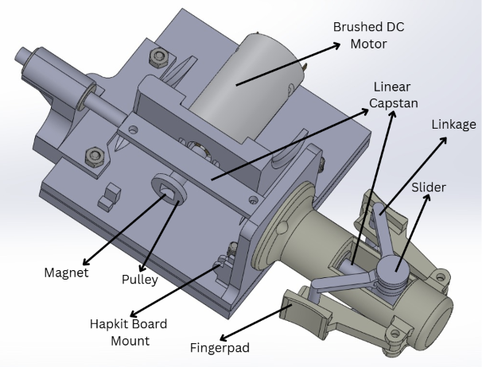
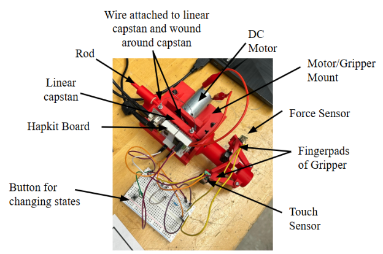
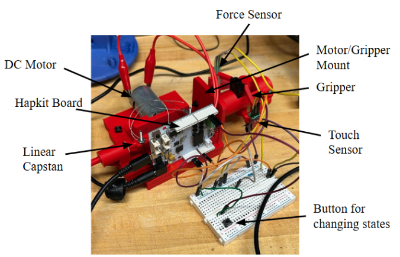
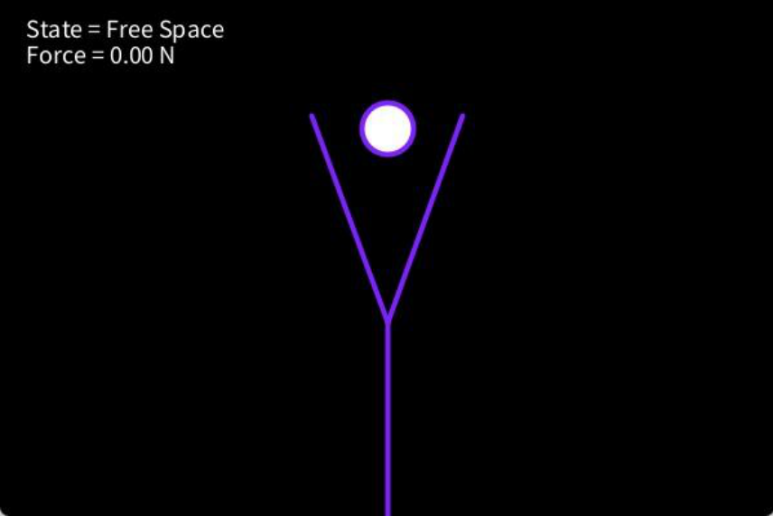
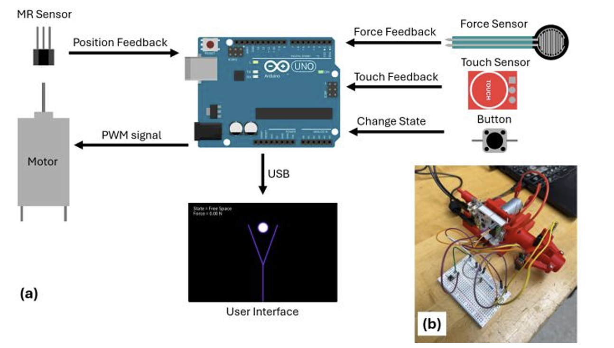
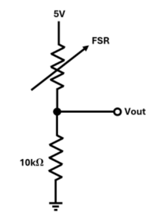
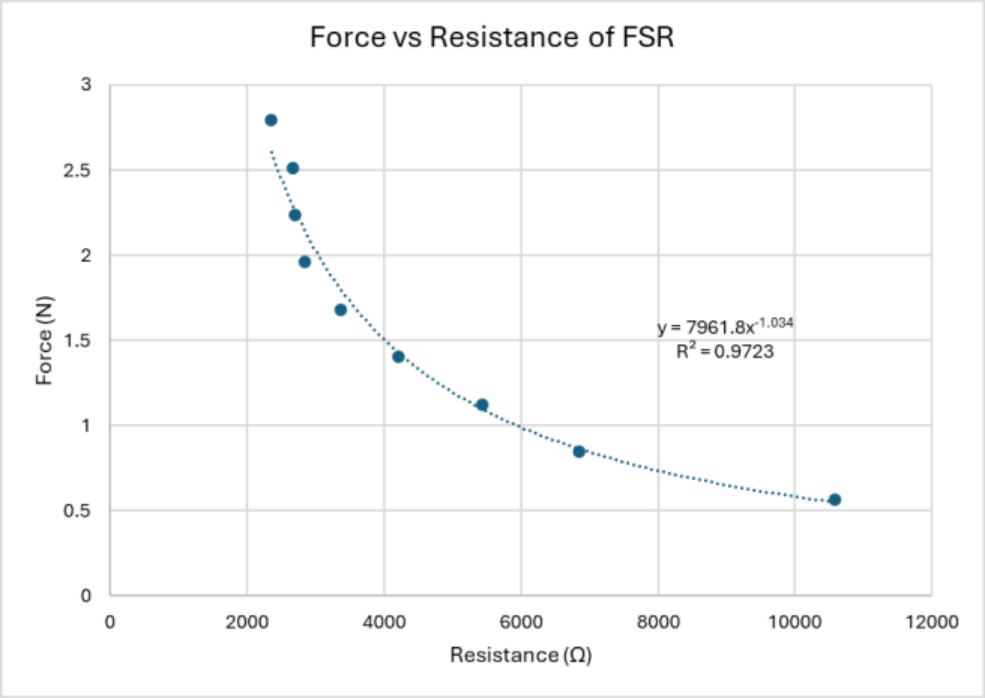

Grasping Force Feedback for da Vinci Surgical Robots
A 3D-printed, 1:1.2 scale replica of the da Vinci leader-hand gripper, driven by a capstan mechanism and a Hapkit 3.0 board, renders grasping forces that let users tell free space, soft tissue and hard tissue apart.

Overview
At a glance
Robotic minimally invasive surgery lacks grasping force feedback, requiring surgeons to rely solely on visual cues during tissue manipulation.
Objective
The problem
Without force feedback, surgeons may apply excessive or inconsistent grasping forces, which can damage delicate tissues.
Prior approaches often rely on wearable pneumatic devices or redesign the surgeon-side master interface entirely. These changes disrupt the familiar ergonomics and would require extensive retraining.
Goal: integrate directly with the existing da Vinci-style leader hand interface without altering its fundamental design, preserving the surgeon's established workflow while adding intuitive, physically grounded haptic cues.
Approach
How it was built
Mechanical design
Vishek: CAD, 3D printing, prototyping · Milla Ivanova helped with CAD
- A kinesthetic haptic interface built as a 1:1.2 scale replica of the da Vinci 3 leader hand gripper.
- The entire mechanical assembly is 3D-printed in PLA: a central linear slider connected to both finger pads through two symmetric linkage assemblies.
- Capstan drive: a linear rod attaches to a tensioned wire wrapped around a pulley, actuated by a DC motor.
- Sleeve bearings along the linear capstan rod minimize friction and keep the motion smooth and repeatable.
- The gripper replica and linkage mount on a base that houses the motor, capstan mechanism and Hapkit board, secured with M4 nuts and bolts.

Electronics and sensing
- A Hapkit 3.0 board integrates a motor driver and a magnetic-resistive (MR) sensor for motor position encoding. A magnet on the capstan pulley provides the reference for the MR sensor.
- A force sensor on the right finger pad measures user-applied reaction forces (FSR: Pattharaphol Chainiwattana).
- A touch sensor detects when the gripper is held; haptic feedback is enabled only when touch is detected. When the user lets go, the system returns the gripper to its resting position.
- A button switches between interaction states.

Software and control
Team · Vishek co-developed the board code for the tissue states · Milla Ivanova helped with the code · Simulation visuals: Bryanna Stalnaker
- Real-time C++ control architecture on the Hapkit 3.0 board for stable haptic feedback.
- Physically based models (spring, damping, friction, impact) for tissue simulation, rendered through position-based control of the slider: by controlling motor position, the system arrests the slider at designated points to render resistive forces at the fingertips.
- Signal filtering and state estimation for smooth, noise-robust force output.
- A real-time Processing simulation receives the Hapkit's position data over USB and drives a virtual gripper that opens and closes with the physical device. When the virtual gripper contacts a simulated object, the software commands the motor to halt the slider.

System
System architecture

Signal flow
- Into the board: MR sensor (position feedback), force sensor (force feedback), touch sensor (touch feedback), button (change state).
- Out of the board: a PWM signal to the motor, and USB to the Processing user interface.
Components
- Custom 3D-printed gripper and motor/gripper mount, Hapkit board, capstan drive with a wire, force sensor, touch sensor, breadboard, resistors, button and wiring.
- Motor: Micro 6-12V DC Motor, driving the capstan to produce the linear displacement of the rod that generates force feedback at the gripper.
- Board power: either a Micro-USB connection or a small external power supply.
Safety (≤ 5 N force limit)
- Hardware: the motor was selected so that no more than 5 N of force can be transmitted to the user. Gripper movement is restricted, and the capstan rod is constrained at both ends, limiting its maximum travel.
- Materials: the gripper is PLA, a material safe for contact with skin. The sensors run at low voltage.
- Software: the limit is also enforced in software, as an extra precaution against mechanical failure.
- The device is non-invasive and only comes into contact with the user's fingertips.
Implementation
Force sensing and calibration
FSR circuit and calibration: Pattharaphol Chainiwattana
The force-sensing resistor (FSR) sits in a voltage divider with a 10 kΩ fixed resistor and a 5 V supply. The sensor resistance is computed from the measured output voltage:
Calibration with known masses was well fitted by a power trendline (report Fig. 5):


Results
Measured forces
| State | Stiffness (N/m) | Force (N) |
|---|---|---|
| Free-Space | 0 | 0-0.05 |
| Soft-Tissue | 200 | 1-3 |
| Hard-Tissue | 600 | 2-4 |
- Free-space force was approximately 0 N, with only internal friction present.
- The soft- and hard-tissue force ranges overlapped somewhat, reflecting variability in contact conditions and sensor nonlinearity.
- Because of the system's nonlinear behaviour and time-varying finger position, the measured force fluctuated and could only be represented as a range rather than a single value.
Qualitative
- Preliminary results show that the system can distinguish free-space, soft-tissue, and hard-tissue interactions.
- Smooth mechanical performance of the fully 3D-printed capstan-linkage system.
- Delivered a fully functional working prototype despite time constraints (see the demo video).
Engineering challenges
Challenges and design decisions
Challenges
- Force ripple: the team identified motor commutation granularity (brushed DC motor) as the primary source of residual force ripple.
- Overlapping force ranges: soft- and hard-tissue ranges overlapped because of variability in contact conditions and sensor nonlinearity.
- Position sensing: the MR sensor, while functional, requires periodic recalibration and is prone to position drift.
- Mechanism: the linkage and slider assembly should be redesigned to reduce friction and eliminate singular configurations that limit controllability.
Design decisions
- Keep the da Vinci leader-hand form instead of a wearable or redesigned interface, to avoid surgeon retraining.
- Enforce the 5 N limit in software as well as hardware.
- Hardware: a brushless DC motor for smoother, more precise force rendering; a higher-resolution, more robust encoder in place of the MR sensor; a redesigned linkage, slider and slider travel.
- Software: replace the Processing stick-figure visualization with a higher-fidelity physics and graphics engine.
- A psychophysics just-noticeable-difference (JND) user study was planned; no user study was run.
Takeaways
What it showed
These findings demonstrate the feasibility of adding intuitive grasping force feedback to a da Vinci-style interface, with future work focused on hardware refinement, improved sensing, and user-study evaluation.
Established a clear path to smoother force rendering: a brushless motor and higher-resolution actuation.
Demo & documents
See it working

- VideoDemo video on YouTube ↗
- ReportGrasping Force Feedback for da Vinci Surgical Robots (PDF, 3 pages) ↗
- ApparatusExperimental apparatus description (PDF, 4 pages) ↗
Note: the report PDF prints the stiffness unit as kN/m; the correct unit is N/m (used on this page).
Team
Credits
- Vishek MasaliaProject lead; gripper CAD design, 3D printing, prototyping; co-developed the board code for the tissue states.
- Pattharaphol ChainiwattanaFSR force sensing (circuit and calibration).
- Milla IvanovaHelped with the code and CAD.
- Bryanna StalnakerReport and simulation visuals.
Course project. "da Vinci" is a trademark of Intuitive Surgical; this is an independent da Vinci-style replica with no affiliation implied.